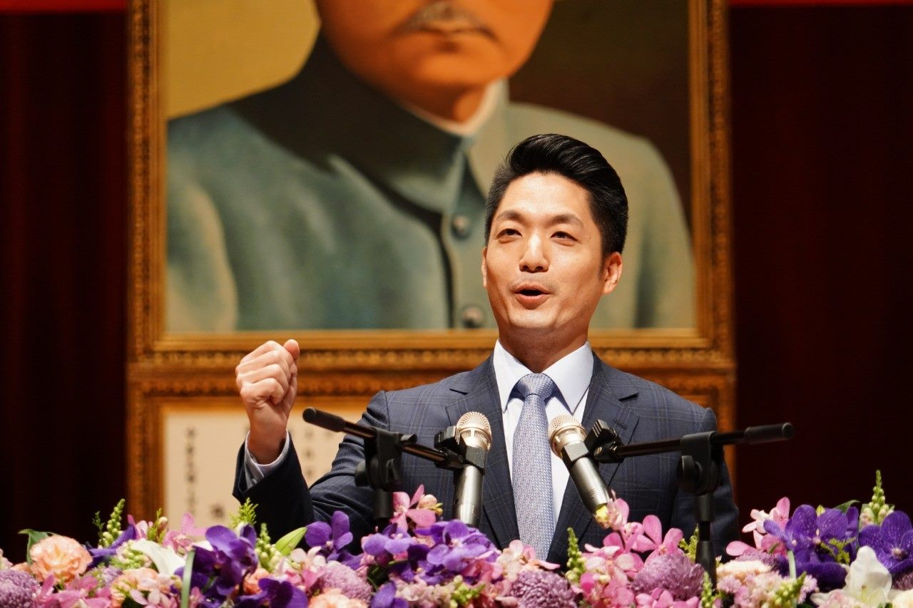
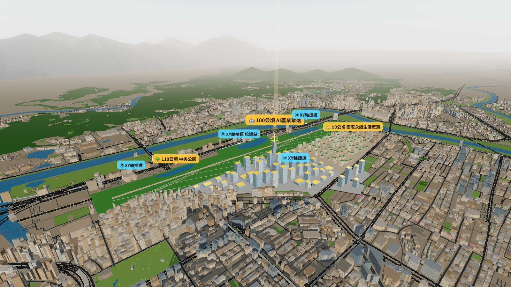
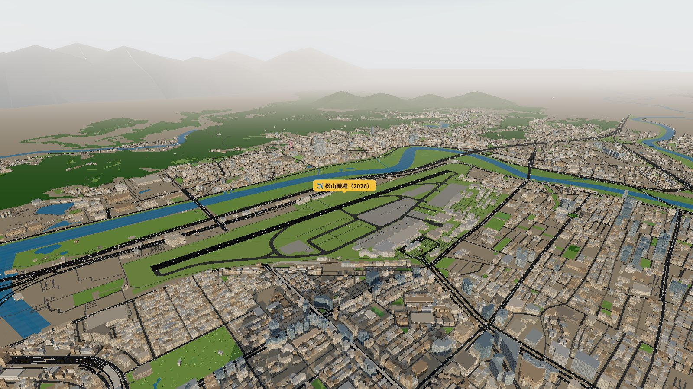
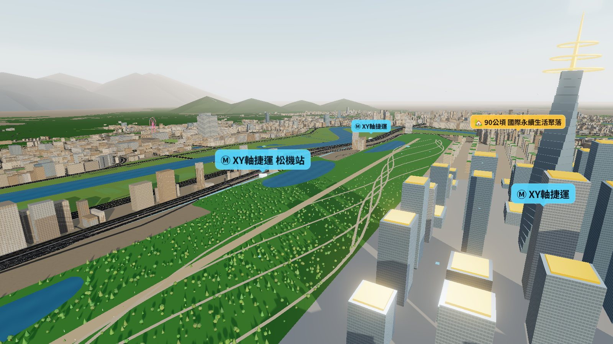
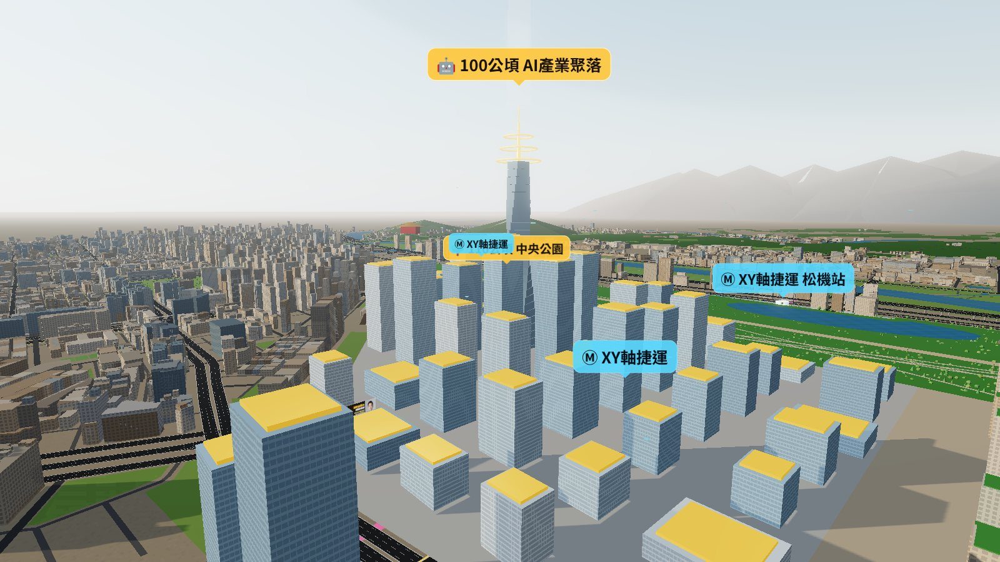
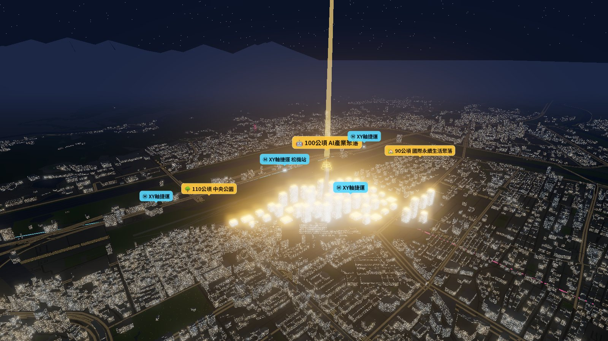
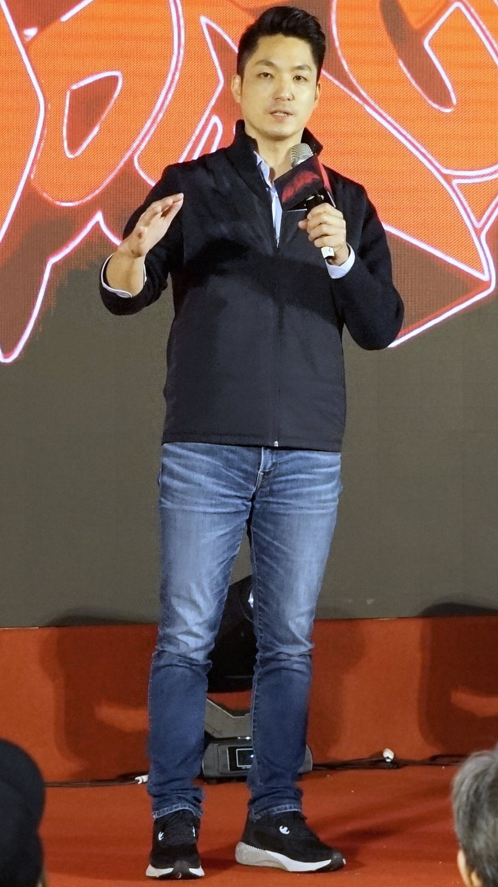
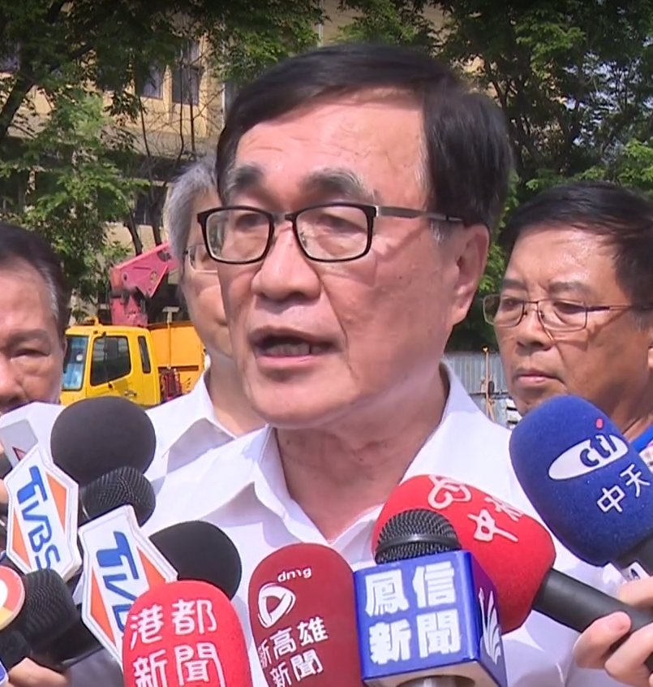

產業
100 公頃 AI 產業聚落。以內科每公頃 360 億元產值為基數，推估 12 兆元產值、6.5 萬就業人口。從晶片到軟體應用，產業鏈上有 200 家臺灣企業。
非官方整理｜2026.10.08 臺北市政府記者會
臺北市長蔣萬安宣布：規劃遷移松山機場，整合機場及周邊 300 公頃，打造全新「臺北AI園區」。
為什麼是現在？
今年初，「臺北隊」成功讓輝達選擇臺北、落腳北士科。蔣萬安說：輝達是臺北打開 AI 時代的鑰匙，更是世界認識臺北、認識臺灣的機會。
「沒有腹地，『亞太AI首都』就只是空談。」— 臺北市長 蔣萬安

新竹科學園區與半導體一度飽受質疑，五十年後孕育出台積電與「護國群山」。
半導體正在走出去，世界正在走進臺北。產業要持續成長，就必須找到下一個空間。
蔣萬安在記者會上提到：他的好友、立委葛如鈞博士近期走訪美國矽谷，分享當地出現 Taiwan Fever Taipei Fever 的現象。隨著輝達來到臺北，國際企業更希望來臺北發展，人才、技術與資金加速匯聚。
打開松機 300 公頃
向北對接北士科、向東串聯內科與南軟、向南銜接市中心。
＊市府尚未公布正式配置圖。本站地圖與 3D 為依新聞稿文字（公園位於松機北半側、AI 園區位於松南營區及松機南側）所繪之示意。
2026 ⇄ 2033





四大革命性創生
100 公頃 AI 產業聚落。以內科每公頃 360 億元產值為基數，推估 12 兆元產值、6.5 萬就業人口。從晶片到軟體應用，產業鏈上有 200 家臺灣企業。
90 公頃國際永續生活聚落，可容納 3.5 萬人；松機遷移解開 570 公頃航高禁限建都更地區，可增加約 15 萬戶居住單元。
全新「臺北 XY 軸捷運」；基湖路、敬業三路、北安路新增跨河廊道；民族東路向東串聯大直、內湖，改善內湖交通。
110 公頃中央公園，和倫敦海德公園差不多大，約為代代木公園 2 倍、大安森林公園 4 倍；結合基隆河大直段河岸再造。
打通臺北交通的任督二脈
Y 軸：從松山機場往南，串聯國父紀念館、大安、公館、中和，促進雙北跨市通勤。
X 軸：串聯士林大同線、圓山、松山機場、內湖，連起北士科、臺北AI園區、內科、南軟四大產業園區。
松機和基隆河把中山、松山、內湖切開，內科與大直每天數十萬通勤人口靠大直橋、民權大橋、麥帥一二橋。松機遷移後：
大台北 = 亞洲新矽谷


「AI 這一波，是歷史時刻，也是台灣的機遇，新北必須接住。」— 李四川（臉書）
李四川認同臺北AI園區構想：輝達進駐北士科後，產業鏈都進來，北市已經沒有地，應提早規劃；松機如何退場、運量如何移轉，要與中央好好溝通。
他主張的 AI 科技廊帶：蘆社大橋、淡北快線把北士科紅利延伸到新北；中和光復線往北延伸，新店、中永和一路接到未來的臺北AI園區；「南有巨蛋城、北有科學城」雙引擎。
「我的第一個任期，成功爭取輝達進駐；
我的第二個任期，要抓住 AI 這樣的歷史性機遇，
為臺灣開創新的『AI黃金世紀』。」
— 臺北市長 蔣萬安
90 年松山機場的轉折
日治時期「臺北飛行場」啟用。
成立「交通部民用航空局臺北航空站」，戰後在臺第一個航空站。
國際航線移往中正國際機場（今桃園國際機場），松機以國內線為主。
兩岸直航，松山－虹橋、羽田、金浦航線陸續開航。
蔣萬安發表「AI黃金世紀」新願景，提出松機遷移、打造 300 公頃臺北AI園區。
桃園機場第三航廈預計啟用。
桃園機場第三跑道預計完工；市府目標配合桃機三航廈與三跑道啟用後完成遷移。
「正如同歷經 32 年才完成的大巨蛋，以及討論 20 多年才拆除的公館圓環，重大城市建設需要時間推動——如果沒有開始，就永遠不會有成果。」
常見問題
蔣萬安表示，五楊高架、機場捷運完成後，臺北到桃園機場約 36 分鐘；桃園機場第三航廈預計 2027 年啟用、第三跑道預計 2033 年完工，整體量能足以承接松機運量。（桃園機場公司回應：三航廈、三跑道的規劃尚未納入松機遷移，後續仍需協調。）
松山機場是軍民合用機場，也有空勤總隊駐點。蔣萬安說明，市府一定會與國防部及中央政府共同合作、共同討論。交通部與內政部已表示需從國家整體角度審慎評估，這是後續最關鍵的協調課題。
市府表示，松機遷移計畫預計於 2033 年完成，距今約 8 年，但現在就必須開始規劃準備，將全力溝通、爭取中央及市民支持。
市府產業局以目前內湖科技園區每公頃 360 億元產值為基數，並考量科技業發展趨勢等因素推估。
與倫敦海德公園相近，約為東京代代木公園的 2 倍、大安森林公園的 4 倍。
不是。這是依據臺北市政府新聞稿與媒體報導整理的非官方介紹網站，3D 與地圖中的園區配置均為示意。正式內容請以臺北市政府公告為準。
帶走分享
地圖資料 © OpenStreetMap 貢獻者（ODbL）。3D 場景以 three.js 製作。本站為非官方整理，與臺北市政府無隸屬關係。